Illegal, Unreported and Unregulated (IUU) fishing is becoming a major issue around the world . In general, IUU fishing is a broad term encapsulating many different scenarios (i.e. illegal: breaking laws, unreported: Not reporting catch, which may not be illegal, Unregulated: fishing in ways or places where there are no laws). For the purposes of this blog, we’ll just limit out discussion to Illegal fishing – i.e. fishing uses practices that are against the law, fishing in areas where it is not allowed, or taking animals which are not allowed to be taken.
In this blog, I'm simply going to present some code demonstrating the simulation of a training dataset. The training dataset consists of 3000 fictional ships that engage in fishing activities. We simulated ships with some of the following information:
First, let's load up the libraries and set variables with our base categories
library(dplyr)
library(tidyr)
library(reshape)
library(foreach)
Case.ship.names <- c("Jimmy Buffet", "Neil Young", "Bruce Lee", "Christian Bale", "Jolly Roger")
Case.ship.years <- c(2002, 1994, 2014, 1975, 1961)
Case.ship.types <- c(1,2,3,4,5)
Case.ship.owners <- c("SparkleFish","FishRGud","KungFuFish","ScummyFishCo","FishARRRies")
Case.ship.countries <- c("Sidonia","Avalon","Noordilund","Slagovnia","Tortuga")
Case.ship.sizes <- c(73, 104, 83, 192, 270 )
Case.ship.ShipTo <- c('LaLaLand','BetaZed','The Shire','Alpha Centauri','Kings Landing')
Fish.Species <- data.frame(species = c('Raricus Fishica','Commonae Eatedie',
'Billidae Nyiecus','Donaldus Trumpfishii',
'Fishica Maximus'),CitesLevel = c('2','3','2','2','3'))
Create names for our 3000 ships here. We don't use ship names in our model as a factor, so we just leave these as numbers for id. We also assign each ship to a randomly selected owner. We ensure that each owner operates approximately the same number of ships to help balance classes.
Ship.Id <- as.factor(c(1:3000))
owners <- sample( Case.ship.owners, 3000, replace=TRUE, prob=c(0.2, 0.2, 0.2, 0.2, 0.2))
Next, we assign each ship to a country. However, responsible owners are more likely to be associated with countries that have stronger regulations on illegal fishing. We do this by sampling fron the country list with set probabilities for each country. In our case, we rank the countries and owners from most responsible to least responsible as such:
| Most responsible | Least responsible | ||||
| Country | Noordilund | Sidonia | Avalon | Slagovnia | Tortuga |
| Owner | SparkleFish | KungFuFish | FishRGud | ScummyFishCo | FishARRRies |
CompanyRegister <- function(owner){
## Responsible more owners are likely to be associated with countries that have stronger regulations on illegal fishing
## We set the probabilities here accordingly to reflect which countries a ship will likely be registered in
if(owner == "SparkleFish" ){
country <- sample( Case.ship.countries, 1, replace=TRUE, prob=c(0.6, 0.1, 0.2, 0.05, 0.05))
}else if(owner == "FishRGud"){
country <- sample( Case.ship.countries, 1, replace=TRUE, prob=c(0.1, 0.5, 0.1, 0.1, 0.1))
}else if(owner == "KungFuFish"){
country <- sample( Case.ship.countries, 1, replace=TRUE, prob=c(0.3, 0.1, 0.5, 0.05, 0.05))
}else if(owner == "ScummyFishCo"){
country <- sample( Case.ship.countries, 1, replace=TRUE, prob=c(0.025, 0.05, 0.025, 0.7, 0.2))
}else if(owner == "FishARRRies"){
country <- sample( Case.ship.countries, 1, replace=TRUE, prob=c(0.025, 0.05, 0.025, 0.3, 0.6))
}
return(country)
}
countries <- data.frame(sapply(owners,function(x){CompanyRegister(x)}))
Next, we want to set the year that a ship was built. We make the assumption that older ships are more likely to engage in illegal fishing . To do this, we use the negative binomial distribution which will allow us to sample as a function of the owner. For example, less responsible owners (e.g., ScummyFishCo) are more likley to have older ships
YearBuilt <- function(owner){
### Now we will assign years built as a function of the owner.
### We use the negative binomial distribution to sort a skewed distribution of probabilities
### Sorting in ascending order (1960 - 2015) will give us newer ships
### Sorted in descending order (1960 - 2015) will give us older ships
### Changing the value of MU to higher values will bring the probability distribution closer to a uniform
if(owner == "SparkleFish" ){
ship.built <- sample(c(1960:2015),1,replace=T,prob=c(sort(rnbinom(56,mu=4,size=1000))))
}else if(owner == "FishRGud"){
ship.built <- sample(c(1960:2015),1,replace=T)
}else if(owner == "KungFuFish"){
ship.built <- sample(c(1960:2015),1,replace=T,prob=c(sort(rnbinom(56,mu=2,size=1000))))
}else if(owner == "ScummyFishCo"){
ship.built <- sample(c(2015:1960),1,replace=T,prob=c(sort(rnbinom(56,mu=4,size=1000))))
}else if(owner == "FishARRRies"){
ship.built <- sample(c(2015:1960),1,replace=T,prob=c(sort(rnbinom(56,mu=2,size=1000))))
}
return(ship.built)
}
year.constructed <- sapply(owners,function(x){YearBuilt(x)})
Just a check showing the assertion that rnbinom produces the desired result
hist(xlab='Year',main='Histogram to pick newer ships',sample(c(1960:2015),10000,replace=T,prob=c(sort(rnbinom(56,mu=4,size=1000)))))
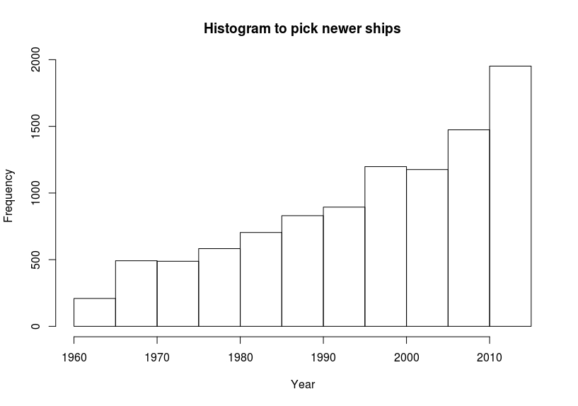
The next step was to set the ship classes... I could have randomly assigned ship sizes across all the simulated ships, then assigned classes.. however, I wanted to operate with the assumption that classes 1 and 5 were more likely to be associated with irresponsible countries and owners. This is because we also assume that the smallest and largest ships are most likely to engage in illegal fishing . So, we rank every combination of owner and country with a score, which assigns a 'risk' value. For example, ScummyFishCo is the 4th most responsible owner, and Tortuga is the 5th most responsible country, therefore a ship owned by ScummyFishCo and registered in Tortuga would receive a score of 9. We then use those scores to come up with probabilities that will be used to sample ship classes.
## This function creates the rank (1 being least risk, 10 being most risk) in order to place ship classes with owner and country
TypeRanker <- function(owner, country, rankdf){
ownRank <- rankdf$ranks[which(rankdf$owners == owner)]
couRank <- rankdf$ranks[which(rankdf$countries == country)]
Rank <- ownRank + couRank
return(Rank)
}
## Used to generate probabilities that a class of ship is associated with an owner/country based on the rank
ProbabilityGenerator <- function(rank){
c1andc5 <- (rank/2)/10
c23and4 <- (1 - (c1andc5*2))/3
pr <- c(c1andc5, c23and4,c23and4,c23and4,c1andc5)
return(pr)
}
### this creates a dataframe with ranks and probabilities for classing ships.
rankCreator <- function(){
ranks <- c(1,2,3,4,5)
owns <- c("KungFuFish","SparkleFish","FishRGud","ScummyFishCo","FishARRRies")
couns <- c("Noordilund","Sidonia","Avalon","Slagovnia","Tortuga")
rankdf <- data.frame(ranks = ranks, owners = owns, countries = couns)
## Get every possible combination of owners and countries
rankexpand <- expand.grid(countries=couns, owners = owns)
Ranks <- sapply(1:nrow(rankexpand),function(x){TypeRanker(rankexpand$owners[x],rankexpand$countries[x],rankdf)})
### Next we subtract 1 from the rankings - this is so the probability generator can create probabilities that scale
### with the most responsible combinations never using high risk vessels, and the least responsible with some
### probability that they may use low risk vessels.
Ranks <- Ranks - 1
Probs <- sapply(Ranks,function(x){ProbabilityGenerator(x)})
rankexpand$Ranks <- Ranks
return(list(rankexpand,Probs))
}
ShipTypes <- function(owner,country,rankexpand,Probs){
### Now we'll assign ship types to the various owners and countries, keeping in mind that we want to make sure
### that the 'corrupt' companies/countries are more likely to engage in illegal fishing, AND that the largest
### and smallest vessels are more likely to be involved in illegal fishing
### We list and order the countries and owners by rank of "responsibility" 1 being most responsible,5 being least
## Which probability to use...
ptouse <- Probs[,which(rankexpand$countries == country & rankexpand$owners == owner)]
## Calculate the type of ship based on the probability
ship.type <- sample(c(1:5),1,prob = ptouse,replace=TRUE)
return(ship.type)
}
rankex <- rankCreator()
rankexpand <- data.frame(rankex[1])
Probs <- data.frame(rankex[2])
ship.types <- sapply(1:length(owners),function(x){ShipTypes(owner=owners[x],country = as.character(countries[x,]),rankexpand,Probs)})
Using the ship classes, we randomly assign a size from the range of sizes within each class. As a little added noise, we make the assumption that larger ships within each class are more likely to be engaging in illegal fishing
Size <- function(class,country){
#### class 1 is the smallest
#### class 5 is the largest (factory trawlers for example)
if(class == 1){
min.size <- 60
max.size <- 100
}else if(class==2){
min.size <- 101
max.size <- 130
}else if(class==3){
min.size <- 131
max.size <- 170
}else if(class==4){
min.size <- 171
max.size <- 220
}else if(class==5){
min.size <- 221
max.size <- 300
}
### Here, we set the relationship so that ships from countries like Sidonia and Noordilund (e.g. 'responsible countries')
### end up being a bit smaller on average - under our assumption that smaller ships from clean countries
### are less likely to fish illegally. Ships from less responsible countries will tend to be larger
if(country == 'Sidonia'){
mx.size.new <- max.size * 0.8
ship.size <- floor(runif(1,min.size,mx.size.new))
}else if(country == 'Avalon'){
## Ships from Avalon are average
ship.size <- floor(runif(1,min.size,max.size))
}else if(country == 'Noordilund'){
mx.size.new <- max.size * 0.8
ship.size <- floor(runif(1,min.size,mx.size.new))
}else if(country == 'Slagovnia'){
mn.size.new <- min.size * 1.2
ship.size <- floor(runif(1,mn.size.new,max.size))
}else if(country == 'Tortuga'){
mn.size.new <- min.size * 1.2
ship.size <- floor(runif(1,mn.size.new,max.size))
}
return(ship.size)
}
ShipSizes <- sapply(1:length(owners),function(x){Size(class = ship.types[x], country = as.character(countries[x,]))})
## now we create the dataframe
Ships <- data.frame(shipName = Ship.Id, owners = owners, countries = countries, shipType = ship.types, yearBuilt = year.constructed, shipSize = ShipSizes)
Now that we have created the basic information about each of the 3000 ships, we need to create a time series for each of those ships. In other words, for each ship and every year the vessel has operated (starting in the year it was constructed), we create data by which we can train our algorithm. For every year in each ship's time series, we create data on:
First, we assign a species of fish targeted by each ship. But we want to assign certain rules based on the class of vessel being used, and assign probabilities of a species being assigned based on those rules. We then pull the cites level (level 2 being more restricted, level 3 being less restricted).
Shipdata$species <- sapply(Shipdata$shipType, function(x){
if(x == 5){
Fish <- sample(Fish.Species$species, 1, replace=TRUE, prob=c(0.6,0.1,0,0,0.3))
}else if(x == 4){
Fish <- sample(Fish.Species$species, 1, replace=TRUE, prob=c(0.5,0.5,0,0,0))
}else if(x == 3){
Fish <- sample(Fish.Species$species, 1, replace=TRUE, prob=c(0,0.5,0,0.5,0))
}else if(x == 2){
Fish <- sample(Fish.Species$species, 1, replace=TRUE, prob=c(0,0.5,0,0.5,0))
}else if(x == 1){
Fish <- sample(Fish.Species$species, 1, replace=TRUE, prob=c(0,0.3,0.7,0,0))
}
})
Shipdata$cites <- sapply(Shipdata$species, function(x){return(Fish.Species$CitesLevel[which(Fish.Species$species == x)])})
I then created the time series for each ship by expanding the dataframe for each ship from the year it was constructed to 2016 (i.e. if it was constructed in 1976, the time series would have n = 40)
### Calculates the number of years active which we use to expand the table to add the year on the dataset
PresentYear <- 2017
Shipdata$totyears <- (PresentYear - Shipdata$yearBuilt) - 1
## We subtract 1 here to make sure we aren't added 2017 as the latest year
Shipdata <- data.frame(Shipdata)
#Expand the table to add the time series (year) data
Shipexpand <-untable(Shipdata[,c(1,2,3,4,5,6,7,8)], num=Shipdata[,9])
### Expands the data to create time series
Train1 <- foreach(k = unique(Shipexpand$shipName), .combine='rbind') %do% {
cat(k,'\n')
A <- Shipexpand[which(Shipexpand$shipName == k),]
A$Years <- sapply(1:nrow(A), function(x){A$yearBuilt[x] + x})
return(A)
}
I next created a data frame which tells us if a country has a 'flag' against it and when it was obtained.. a value of 99999 means no flag has been given.
C.flagged <- data.frame(countries = Case.ship.countries, yearflagged = c(2005,1994,99999,1972,1962),severity=c(1,1,0,2,2))
### Get the severity flags for the countries
Train2 <- foreach(k = unique(Train1$shipName),.combine='rbind') %do% {
cat(k,'\n')
Dat <- Train1[which(Train1$shipName == k),]
Dat$countryFlag <- Flagged(C.flagged,Dat)
return(Dat)
}
We do something similar with the owners, except instead of severity, we use the number of infractions (flags) against an owner
O.flagged <- data.frame(owners = Case.ship.owners, numflags = c(1,5,1,14,20))
SFflags <- c(1991)
SFflagcount <- c(1)
FGflags <- c(1991,1994,1999,2002,2004)
FGflagcount <- c(1:length(FGflags))
KFflags <- c(1982)
KFflagcount <- c(1:length(KFflags))
SCflags <- c(1962,1971,1972,1975,1980,1982,1983,1984,1991,1992,1995,1999,2000,2007)
SCflagcount <- c(1:length(SCflags))
FAflags <- c(1961,1963,1964,1965,1968,1970,1972,1975,1977,1980,1984,1989,1992,1994,1999,2000,2004,2005,2007,2010)
FAflagcount <- c(1:length(FAflags))
O.expand <-untable(O.flagged[,c(1,2)], num=O.flagged[,2])
O.expand$flagged <- c(SFflags,FGflags,KFflags,SCflags,FAflags)
O.expand$flagcount <- c(SFflagcount,FGflagcount,KFflagcount,SCflagcount,FAflagcount)
### Place the flags in for the owners
Train3 <- foreach(k = unique(Train2$shipName),.combine='rbind') %do% {
cat(k,'\n')
Dat <- Train2[which(Train2$shipName == k),]
Dat$Num.O.flags <- OFlagged(O.expand,Dat)
return(Dat)
}
Next we simulate if a ship had on it's WMS / AIS system during the fish. In reality, this would be hard to tell - the WMS/AIS system needs to be linked to the database. We'll do this as a function of owner, country, and fish species. We'll set this as the probability that the AIS is ON (or 1)
ownsprobs <- data.frame(owners = c("KungFuFish","SparkleFish","FishRGud","ScummyFishCo","FishARRRies"),Probs = c(5,4,3,2,1))
counprobs <- data.frame(countries = c("Noordilund","Sidonia","Avalon","Slagovnia","Tortuga"),Probs = c(5,4,3,2,1))
fishprobs <- data.frame(species = c('Raricus Fishica','Commonae Eatedie','Billidae Nyiecus','Donaldus Trumpfishii',
'Fishica Maximus'),Probs = c(1,5,2,3,4))
## 15 is the maximum value, so we'll subtract the additive probability from 18 (to make some wiggle room for the possibility that
## a situation where 15 comes up does not always get assigned an AIS ON (1))
Train3$AIS <- sapply(1:nrow(Train3),function(x){
owner <- Train3$owners[x]
country <- Train3$country[x]
fish <- Train3$species[x]
ProbAIS <- ownsprobs$Probs[which(ownsprobs$owners == owner)]+
counprobs$Probs[which(counprobs$countries == country)]+
fishprobs$Probs[which(fishprobs$species == fish)]
ProbNoAIS <- 18 - ProbAIS
AIS <- sample(c(0,1),1,prob=c(ProbNoAIS,ProbAIS))
})
Before assigning the response variable, we need to assign values for where the goods are being shipped. We assign the ship-to location randomly. However, we want to also program in situations where a ship changes ship to locations, which is indicative of a higher likelihood of illegal activity in our dataset.
ShipTo <- c('LaLaLand','Alpha Centauri','BetaZed','The Shire','Kings Landing')
seed <- 1
Train4 <- foreach(k = unique(Train3$shipName), .combine='rbind') %do% {
Dat <- data.frame(Train3[which(Train3$shipName == k),])
EndPoint <- sample(ShipTo,1)
Dat$ShipTo <- rep(EndPoint,nrow(Dat))
seed <- seed+1
return(Dat)
}
### Now we make it so a few of the high risk operators/owners and fish species end up sometimes changing shipto locations
Train4$ShipSwitch <- rep(0,nrow(Train4))
Train5 <- foreach(k = unique(Train4$shipName), .combine='rbind',.errorhandling='stop') %do% {
cat(k,'\n')
Dat <- Train4[which(Train4$shipName == k),]
if(unique(Dat$owners) == "ScummyFishCo" | unique(Dat$owners) == "FishARRRies" ){
Samp <- sample(c(1:10),1,replace=T)
if(Samp > 5){
if(unique(Dat$species)=='Raricus Fishica' | unique(Dat$species)=='Billidae Nyiecus'){
rows <- sample(c(1:nrow(Dat)),2,replace=T)
Dat$ShipTo[rows[1]] <- sample(ShipTo,1,replace=T)
Dat$ShipTo[rows[2]] <- sample(ShipTo,1,replace=T)
## We do this for reference for creating our dataset
Dat$ShipSwitch[rows[1]] <- 1
Dat$ShipSwitch[rows[2]] <- 1
}
}
}
return(Dat)
}
all in all, we have ten assumptions that we want to use here:
Based on our assumptions, we will score each class or variable with higher values indicating a higher probability of illegal fishing. Those score will be added across rows for each of the variables, and the score will determine the probability that a ship is engaging in illegal fishing. NOTE We set these scores somewhat arbitrarily here in order to strengthen the patterns so when we model this (in an upcoming blog), they are picked out
## Assumption 1
shipprobs <- data.frame(class = c(1,2,3,4,5), scores= c(10,2,2,4,10))
## Assumption 2
counprobs <- data.frame(countries = c("Noordilund","Sidonia","Avalon","Slagovnia","Tortuga"),scores = c(0.25,0.3,1,6,15))
## Assumption 3
ownsprobs <- data.frame(owners = c("KungFuFish","SparkleFish","FishRGud","ScummyFishCo","FishARRRies"),scores = c(0.01,0.01,0.5,14,15))
## Assumption 4 will be scaled to a score of 5
scalar <- length(2017:1960)/5
constructionprobs <- data.frame(yearbuilt = c(2017:1960), score = c((1:length(2017:1960))/scalar))
## Assumption 5
fishprobs <- data.frame(species = c('Raricus Fishica','Commonae Eatedie','Billidae Nyiecus','Donaldus Trumpfishii','Fishica Maximus'),
scores = c(4,0.5,3,1,0.5))
## Assumption 6
citesprobs <- data.frame(cites = c(2,3), scores= c(2,1))
## Assumption 7 scaled to 5
scalar <- length(0:20)/30
ownerflagprobs <- data.frame(numflags = c(0:20), score = c((1:length(0:20))/scalar))
## Assumption 8
countryflagprobs <- data.frame(flag = c(0,1,2), score=c(0,1,10) )
## Assumption 9
switchprobs <- data.frame(switch = c(0,1), score = c(0,5))
## Assumption 10
AISprobs <- data.frame(AIS = c(0,1), score= c(5,1))
Finally, we combine these into the training data frame
IllegalFishing <- sapply(1:nrow(Train5),function(x){
shipclass <- Train5$shipType[x]
country <- Train5$country[x]
owner <- Train5$owners[x]
yearBuilt <- Train5$yearBuilt[x]
fish <- Train5$species[x]
cites <- Train5$cites[x]
ownerflagged <-Train5$Num.O.flags[x]
countryflagged <-Train5$countryFlag[x]
shipToSwitch <-Train5$ShipSwitch[x]
AIS <-Train5$AIS[x]
ProbIllegal <- shipprobs$score[which(shipprobs$class == shipclass)]+
counprobs$score[which(counprobs$countries == country)]+
ownsprobs$score[which(ownsprobs$owners == owner)]+
constructionprobs$score[which(constructionprobs$yearbuilt == yearBuilt)]+
fishprobs$score[which(fishprobs$species == fish)]+
citesprobs$score[which(citesprobs$cites == cites)]+
ownerflagprobs$score[which(ownerflagprobs$numflags == ownerflagged)]+
countryflagprobs$score[which(countryflagprobs$flag == countryflagged)]+
switchprobs$score[which(switchprobs$switch == shipToSwitch)]+
AISprobs$score[which(AISprobs$AIS == AIS)]
ProbNotIllegal <- 101 - ProbIllegal
cat(x,'\n')
Illegal <- sample(c(0,1),1,prob=c(ProbNotIllegal,ProbIllegal))
return(Illegal)
})
TrainingDat <- Train5
TrainingDat$Illegal <- IllegalFishing
I use ggplot2 here to test the assumptions
ShipGroups <- alldata %>% group_by(shipType,Illegal) %>% summarise(n = n())
p <- ggplot(data = ShipGroups, aes(x = factor(shipType), y = n,
fill = factor(Illegal)))
p + geom_bar(stat = "identity",
position = position_dodge(0.9)) +
scale_fill_discrete(name = "Illegal Fishing")+
labs(x = 'Ship class', y = 'count')
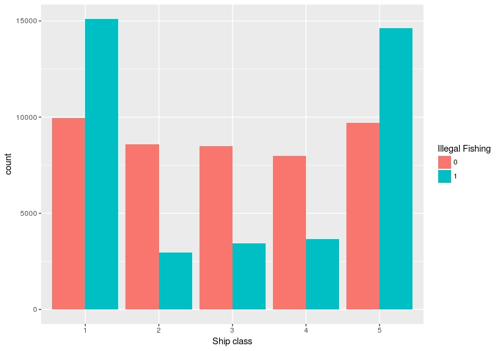
ShipGroups <- alldata %>% group_by(country,Illegal) %>% summarise(n = n())
p <- ggplot(data = ShipGroups, aes(x = factor(country), y = n,
fill = factor(Illegal)))
p + geom_bar(stat = "identity",
position = position_dodge(0.9)) +
scale_fill_discrete(name = "Illegal Fishing")+
labs(x = 'Country', y = 'count')
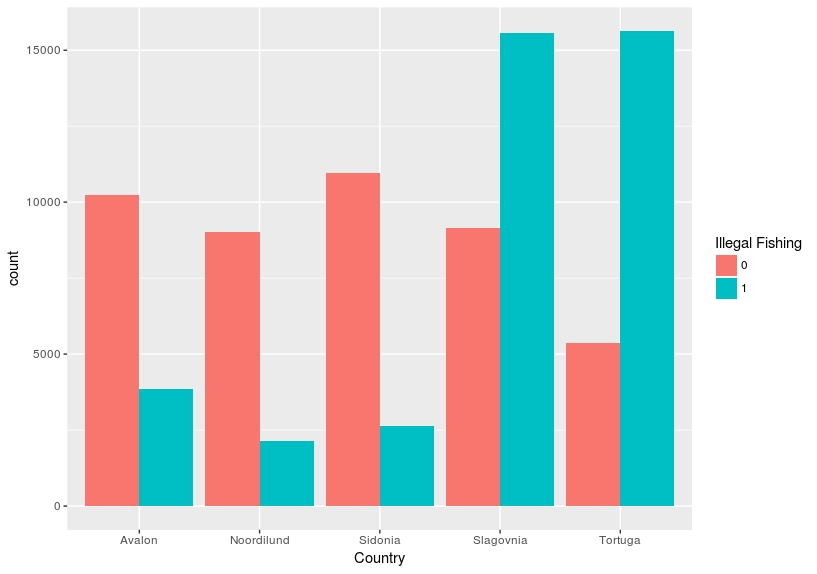
ShipGroups <- alldata %>% group_by(owners,Illegal) %>% summarise(n = n())
p <- ggplot(data = ShipGroups, aes(x = factor(owners), y = n,
fill = factor(Illegal)))
p + geom_bar(stat = "identity",
position = position_dodge(0.9)) +
scale_fill_discrete(name = "Illegal Fishing")+
labs(x = 'Owner', y = 'count')
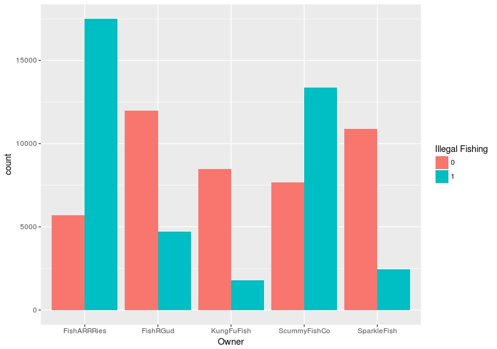
ShipGroups <- alldata %>% group_by(yearBuilt,Illegal) %>% summarise(n = n())
p <- ggplot(data = ShipGroups, aes(x = factor(yearBuilt), y = n,
fill = factor(Illegal)))
p + geom_bar(stat = "identity",
position = position_dodge(0.9)) +
scale_fill_discrete(name = "Illegal Fishing")+
labs(x = 'year built', y = 'count')+
scale_x_discrete(breaks = seq(1960,2015,by=3),labels=seq(1960,2015,by=3))
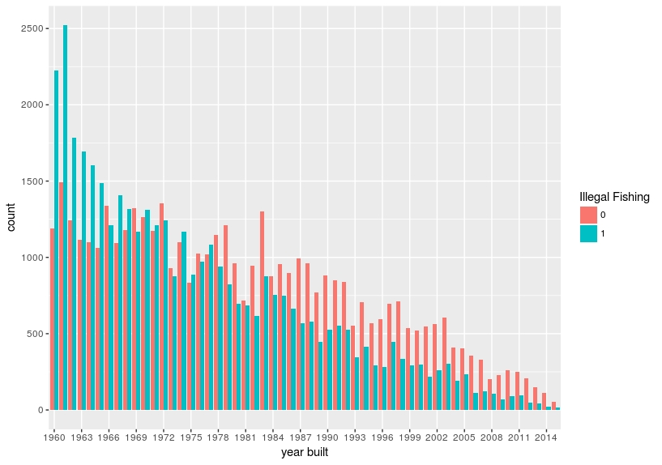
ShipGroups <- alldata %>% group_by(species,Illegal) %>% summarise(n = n())
p <- ggplot(data = ShipGroups, aes(x = factor(species), y = n,
fill = factor(Illegal)))
p + geom_bar(stat = "identity",
position = position_dodge(0.9)) +
scale_fill_discrete(name = "Illegal Fishing")+
labs(x = 'Species', y = 'count')
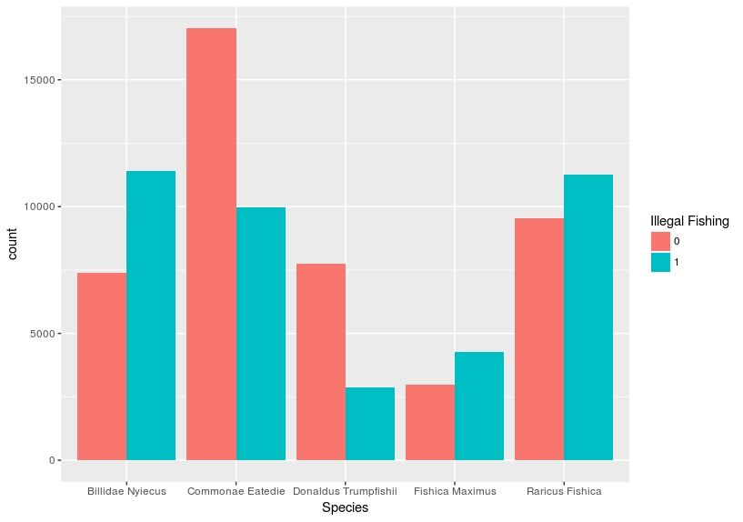
ShipGroups <- alldata %>% group_by(cites,Illegal) %>% summarise(n = n())
p <- ggplot(data = ShipGroups, aes(x = factor(cites), y = n,
fill = factor(Illegal)))
p + geom_bar(stat = "identity",
position = position_dodge(0.9)) +
scale_fill_discrete(name = "Illegal Fishing")+
labs(x = 'cites', y = 'count')
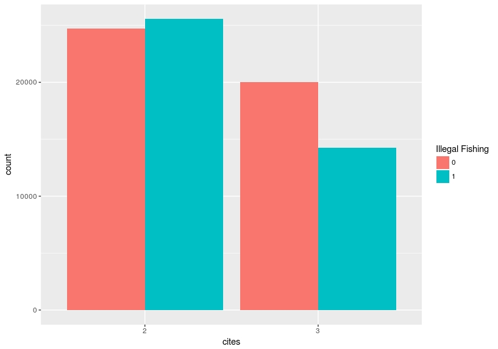
ShipGroups <- alldata %>% group_by(Num.O.flags,Illegal) %>% summarise(n = n())
p <- ggplot(data = ShipGroups, aes(x = factor(Num.O.flags), y = n,
fill = factor(Illegal)))
p + geom_bar(stat = "identity",
position = position_dodge(0.9)) +
scale_fill_discrete(name = "Illegal Fishing")+
labs(x = 'Number of flags against owner', y = 'count')
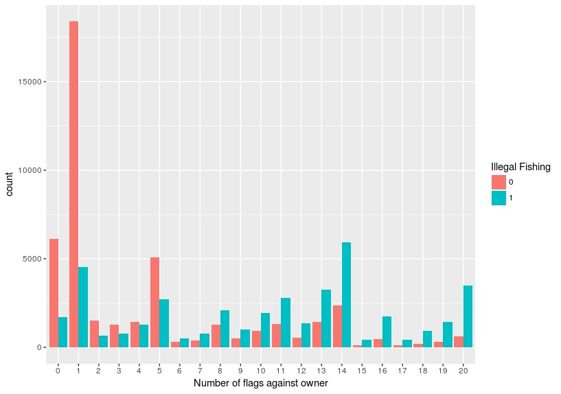
ShipGroups <- alldata %>% group_by(countryFlag,Illegal) %>% summarise(n = n())
p <- ggplot(data = ShipGroups, aes(x = factor(countryFlag), y = n,
fill = factor(Illegal)))
p + geom_bar(stat = "identity",
position = position_dodge(0.9)) +
scale_fill_discrete(name = "Illegal Fishing")+
labs(x = 'Severity of flag against country', y = 'count')
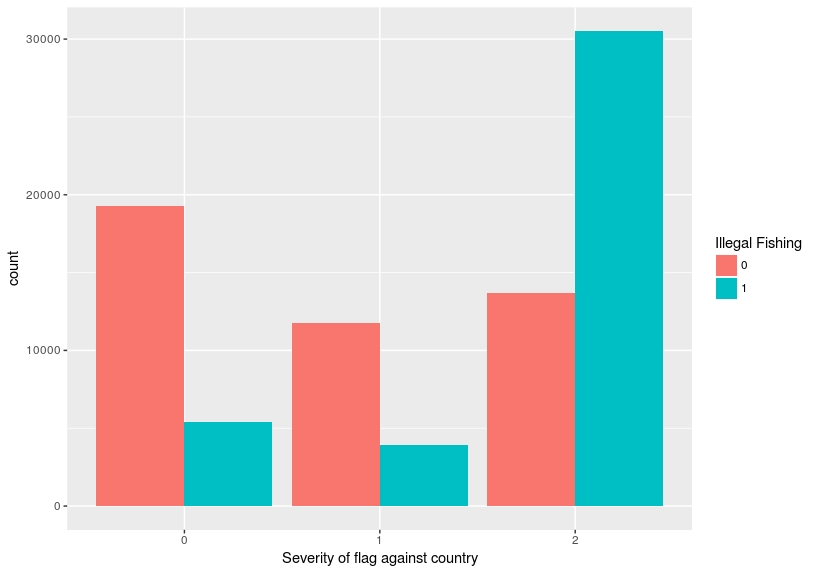
ShipGroups <- alldata %>% group_by(ShipSwitch,Illegal) %>% summarise(n = n())
p <- ggplot(data = ShipGroups, aes(x = factor(ShipSwitch), y = n,
fill = factor(Illegal)))
p + geom_bar(stat = "identity",
position = position_dodge(0.9)) +
scale_fill_discrete(name = "Illegal Fishing")+
labs(x = 'Ship switched trading route (1 = yes, 0 = no)', y = 'count')
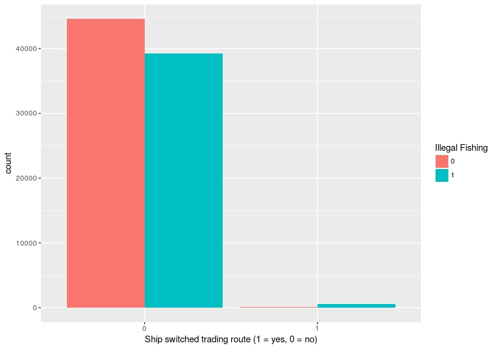
ShipGroups <- alldata %>% group_by(AIS,Illegal) %>% summarise(n = n())
p <- ggplot(data = ShipGroups, aes(x = factor(AIS), y = n,
fill = factor(Illegal)))
p + geom_bar(stat = "identity",
position = position_dodge(0.9)) +
scale_fill_discrete(name = "Illegal Fishing")+
labs(x = 'AIS active (1 = yes, 0 = no)', y = 'count')
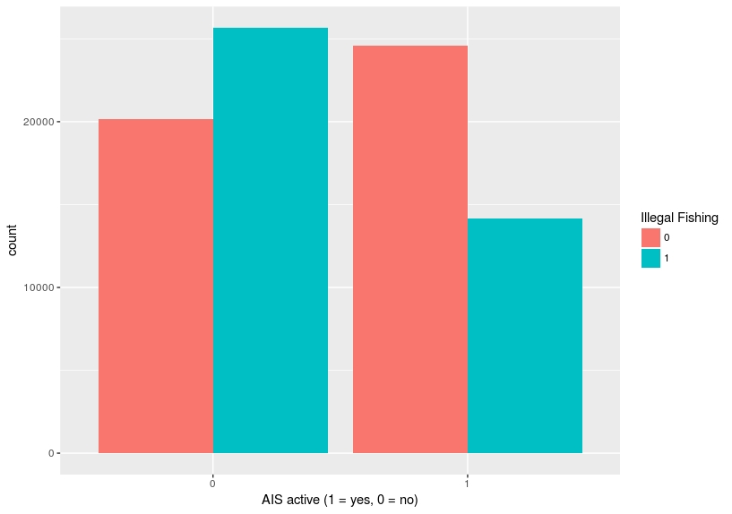
All of these data and the code can be accessed at the Github page . These data are used as the training set for a Shiny application that you can find at: https://grwhumphries.shinyapps.io/iuushiny/ . The goal of this beign to highlight how machine learning applications can be used for decision support in the fight against illegal fishing
. Dr. Grant R.W. Humphries
Dr. Grant R.W. HumphriesI would love to meet you on Twitter! You can follow our blog there, and see all sorts of interesting posts that aren't just cats on a roomba!